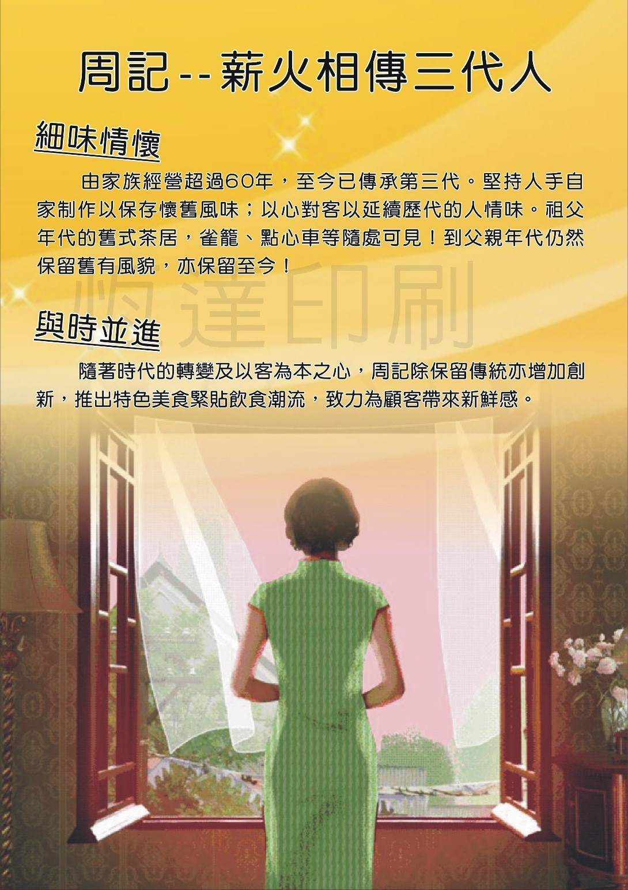

Contact
Chau Kee has a long 60 year tradition from Chow family that established this brand
at their first restaurant at Aberdeen, Hong Kong.
This is now the third generation of the family business and we are proud to present to you
the same flavor and sensation of traditional Dim Sum recipes and some new meals at affordable prices.
There are several branches throughout Hong Kong but this particular one is at:
Tin Hau
Electric Road
Working hours: 7:00 - 20:00
You can also call for information or order To-Go at this:
Phone No.: 66545104
e-mail: chaukee.tin.hau@yahoo.com
We are looking forward to see you very soon. :)